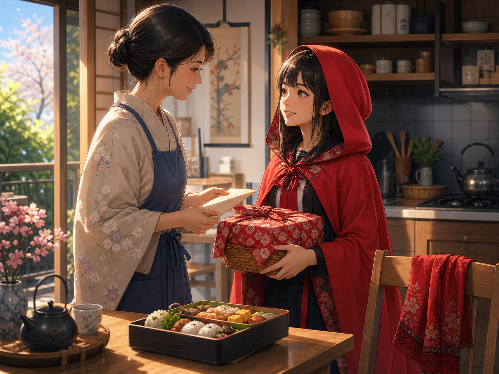
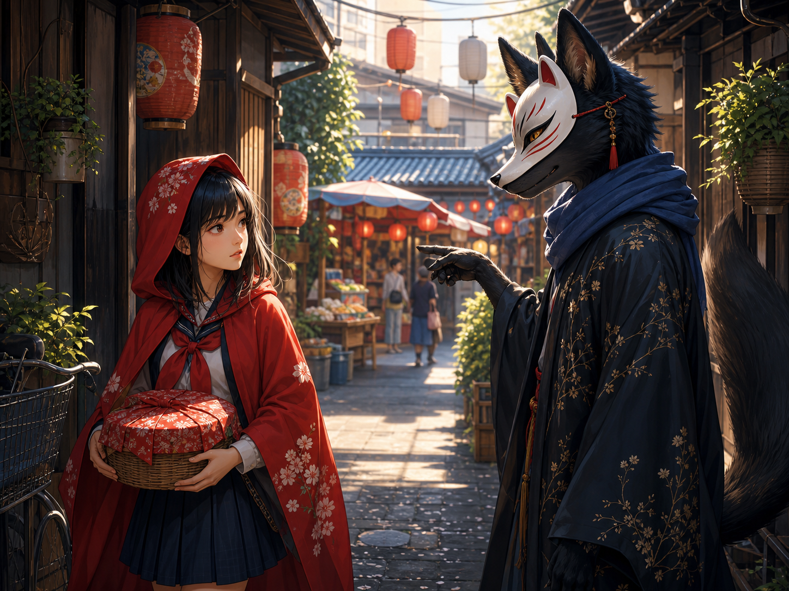
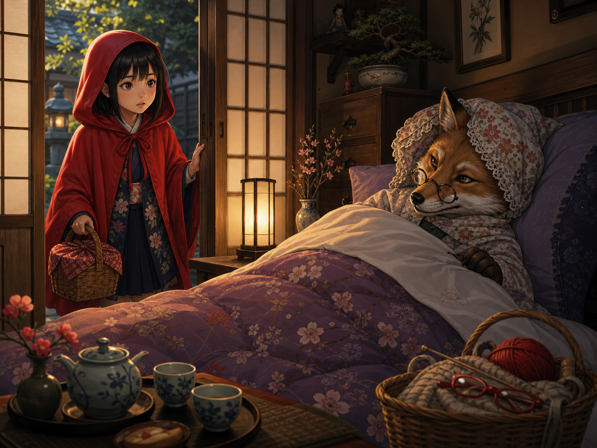
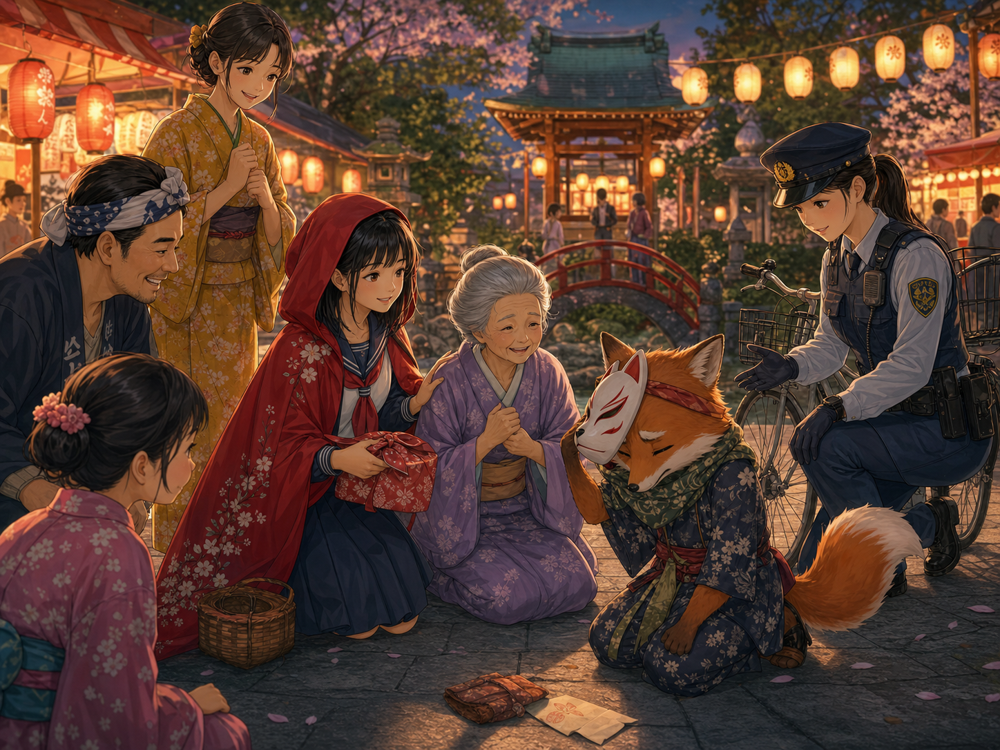
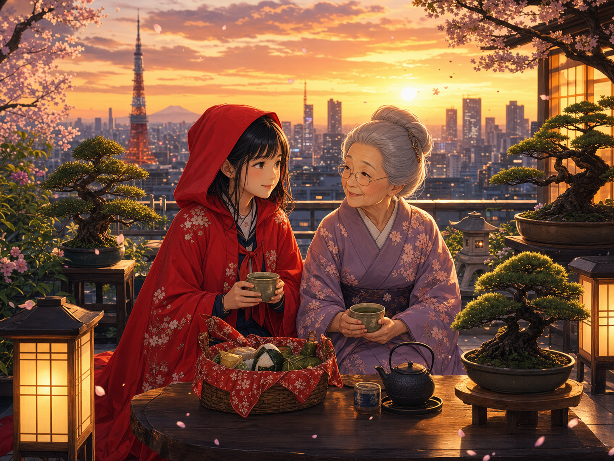

Choisir la ville
Le lieu décide du décor, des dangers, des objets et des personnages secondaires.
Créer une version locale de Caperucita Roja avec les bases du récit littéraire.
Chaque atelier transforme la même histoire selon une ville ou une région différente. On garde la structure du conte, on change les personnages, les lieux, les objets et le conflit, puis on ajoute quelques verbes au passé simple.
Consigne d'atelier
Le but est d'écrire un récit de 250 à 300 mots, niveau B1, en gardant le squelette du conte original mais en changeant le monde autour de l'héroïne.
Le lieu décide du décor, des dangers, des objets et des personnages secondaires.
Remplacez la forêt, le loup, la maison et le panier par des éléments cohérents avec la région.
Utilisez surtout un français libre, avec quelques actions au passé simple pour faire avancer le récit.
Lisez votre version, expliquez vos choix culturels et comparez avec une autre version.
Obligatoire
Situation initiale, élément déclencheur, péripéties, dénouement et situation finale. Ajoutez au moins 4 connecteurs avancés et une expression idiomatique de la section du cours.
Outils d'écriture
Utilisez-les pour organiser votre récit, créer une opposition, signaler une conséquence ou faire avancer l'action.
| Connecteur | Traducción al español | Utilité | Prononciation |
|---|---|---|---|
| Cependant | sin embargo | opposition douce | |
| Toutefois | no obstante | restriction | |
| En revanche | en cambio | contraste | |
| Néanmoins | sin embargo / no obstante | opposition soutenue | |
| Par conséquent | por consiguiente | conséquence | |
| C'est pourquoi | por eso | explication finale | |
| De plus | además | ajout | |
| D'ailleurs | por cierto / además | précision | |
| Tandis que | mientras que / en cambio | simultanéité ou contraste | |
| Au moment où | en el momento en que | repère narratif | |
| Or | ahora bien | tournant logique | |
| Ainsi | así / de este modo | bilan ou conséquence | |
| Malgré cela | a pesar de eso | résistance |
Exemple modèle
Cette version garde les bases de Caperucita Roja, mais elle change le décor, l'objet à transporter, le danger et le dénouement. Le vocabulaire reste B1 et le passé simple apparaît seulement pour les actions principales.





À Tokyo, Akari portait une cape rouge brodée de fleurs blanches. Chaque samedi, elle visitait sa grand-mère, qui habitait près d'un vieux jardin de Yanaka. Ce matin-là, sa mère lui confia un panier de bento, du thé vert et une lettre. « Ne prends pas les ruelles du marché », dit-elle. « Promis, maman. Je garderai mon sang-froid », répondit Akari.
Akari prit le métro, salua le vendeur de mochi et marcha sous les lanternes. Soudain, un renard noir, élégant et trop poli, apparut devant elle. Il lui proposa le chemin du canal pour trouver des fleurs de cerisier. Akari hésita. Le canal brillait, et les fleurs semblaient l'appeler. Elle suivit le renard et perdit quelques minutes.
Pendant ce temps, le renard courut chez la grand-mère. Il entra, imita sa voix et cacha la vieille dame dans le jardin. Quand Akari arriva, elle observa les oreilles pointues, la voix grave et les lunettes mal placées. Alors elle comprit le piège. Au lieu de crier, elle prit les devants: elle fit tomber le panier, ouvrit la lettre de sa mère et appela la gardienne du sanctuaire, qui passait à vélo.
Le renard avoua tout. La grand-mère revint en riant, un peu fâchée mais saine et sauve. « Merci, Akari. Tu as gardé ton sang-froid, et tu as sauvé notre dîner », dit-elle. Ce soir-là, Akari partagea le bento sur le toit. Elle apprit qu'un récit peut changer de ville, mais que la prudence reste toujours un bon guide.
Compréhension et analyse
Les options se mélangent à chaque chargement pour éviter un patron de réponse. Lisez attentivement: plusieurs distracteurs sont plausibles.
Ateliers par région
Cliquez sur une image pour écouter sa présentation en français. Ensuite, chaque groupe reçoit une version à développer.
Aucune présentation lancée.
Production finale
Un récit écrit de 250 à 300 mots, une lecture orale courte et une justification des choix culturels. Les étudiants peuvent dessiner ou chercher une image d'ambiance pour accompagner leur version.